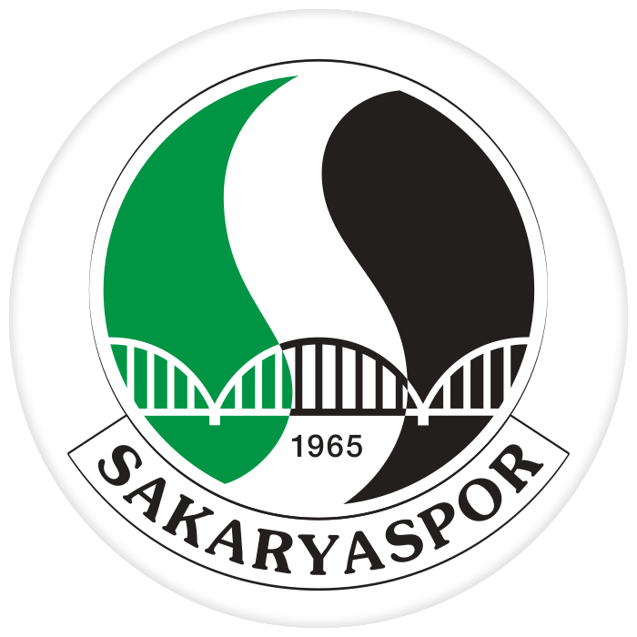

Sakaryaspor Kulübü'nün Kuruluş Hikayesi
Sehrin 1900'lü yılların başında başlayıp, zaman içinde olgunlaşan köklü futbol geçmişinin, bir potada
harmanlandığı, şehrin tüm farklı futbol değerlerinin güçlerini birleştirme iradesi gösterdiği 1965 yılında
başlar. Dönemin gençlik ve spor bakanlığının, oluşturmak istediği Türkiye II. Milli Futbol Ligi projesi ve
bunun ile ilgili olarak şehrin önde gelenlerinin girişim yapmasını talep etmesi, kuruluşun mihenk taşıdır.
Dönemin futbol federasyonu başkanı Orhan Şeref Apak'ın girişimleri ve o dönem Adapazarı Şekerspor
kaleciliğini yapan Fikret Aldinç'in Sakarya şehrinin futbol birikimine kefil olması ile süreç resmen
başlamıştır.
10 Mayıs 1965 tarihinde Sakarya'da bulunan köklü takımlardan İdman Yurdu başkanı Av.Ali Necdet Güven,
Güneşspor kulüp başkanı Ethem Boran, Gençler Birliği kulüp başkanı Şevket Başak, Ada Genlik kulübü 2.başkanı
Hamdi Uzel ve beraberindeki yöneticiler bir araya gelerek, şehrin tüm dinamiklerini ve güçlerini tek çatı
altında toplanarak, şehrin tek profesyonel takımını kurulmasına dair görüşmeleri başlatmışlardır.
Sakaryaspor'un temelleri bu görüşmelerde atılmıştır.
Ethem Boran'ın çalışmalara liderlik etmesi ile kuruluş süreci hızlanmış, İdman Yurdu, Ada Gençlik, Gençler
Birliği ve Güneşspor bünyesinden gelen 20 kişilik kurucu listesi, Sakaryaspor kulübünün kuruluş dilekçesini
17 Haziran 1965 yılında ilgili kurumlara sunarak, büyük fedakarlıklarla efsane'nin hikayesini yazmaya
başlamışlardır.

TÜRKİYE KUPASI 1987 - 1988
1. Lig’den henüz gelmişdik, küme düşme potasından 6 puan uzaklıktaydık, yerimiz 11’incilik, puanımız 51,
averajımız -13’tü. Federasyon Kupası’nı kazanmamız bu performansımızla bizi bu listeye dahil edemezdi ama
biz diğer takımların hepsinden daha büyük bir başarıyla o kupayı müzemize götürdük. “Kuralar çekildi, bize
Fenerbahçe çıktı. ‘Eyvah’ dedik” diyor Oğuz Çetin. “Ama ilk maçta onları 5-1 yendik. Ardından çeyrek final
kuraları çekildi, bu sefer Beşiktaş’la eşleştik. Yine ‘Eyvah’ diye hayıflandık ama onları da ilk maçta 4-0
yenmeyi başardık.” Yarı final ilk maçında Zonguldakspor’a 5 gol atarak finale çıktık, finalde ise Samsunspor
engelini aşıp kupayı kaldırdık. Bu, Sakaryaspor’umuzun tek Federasyon Kupası oldu. Bunun yanı sıra 1 kere
çeyrek final 2 kere yarı final oynadık.
KUPA GALİPLERİ KUPASI 1988 - 1989
UEFA tarafından 1998/1999 sezonuna kadar düzenlenen bir kupa organizasyonu olan UEFA Kupa Galipleri Kupasına,
kendi ülkelerinde ulusal kupa şampiyonu olmuş Avrupa kulüpleri katılıyordu. 1988/1989 sezonunda bu
organizasyona katılmayı hak ederek Türkiye'yi temsil eden takım olduk.
1.LİG ŞAMPİYONLUĞU
Şampiyonluk : 1980-1981 | 1986-1987 | 2003-2004
Play off şampiyonluk : 1997-1998 | 2005-2006